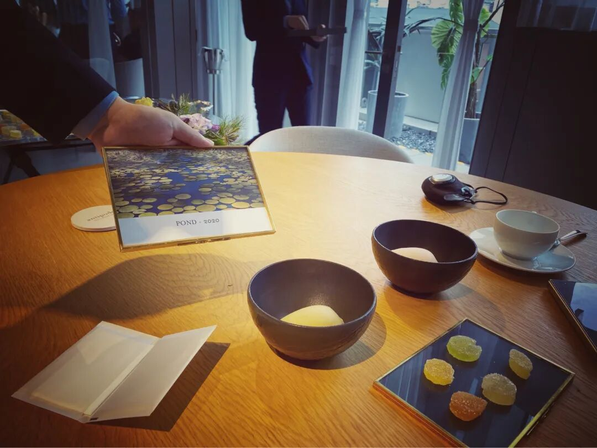
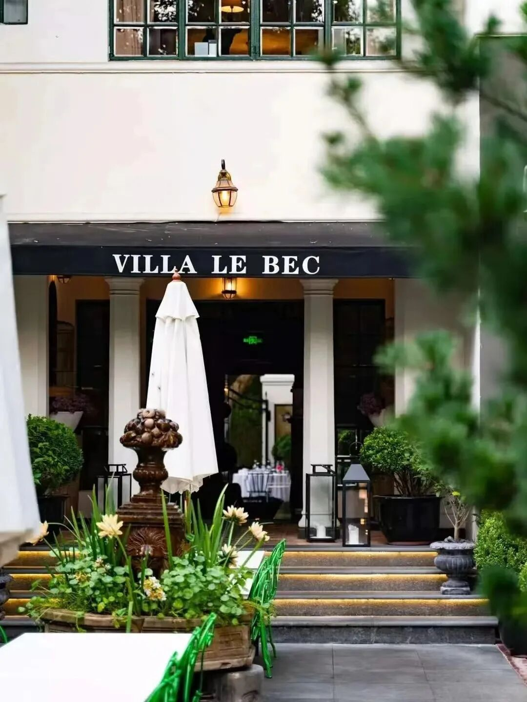
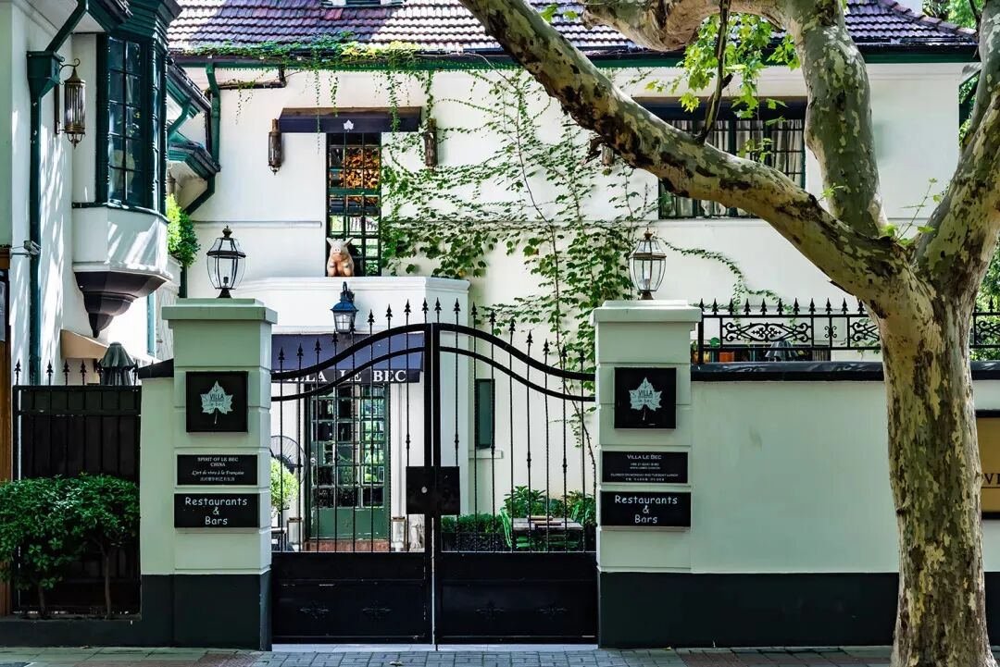
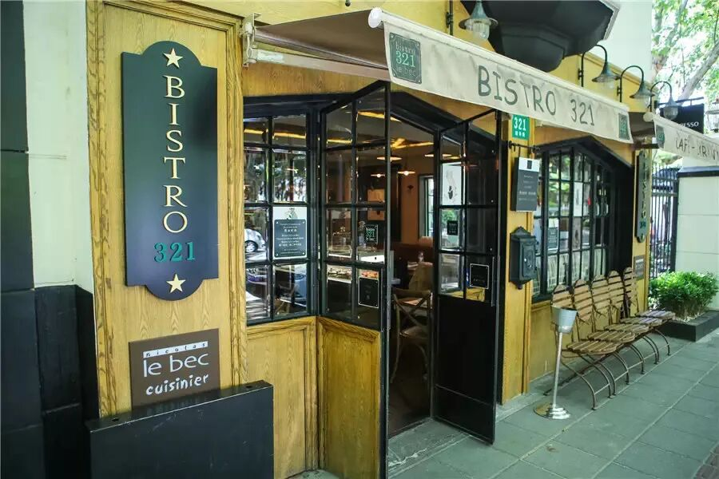
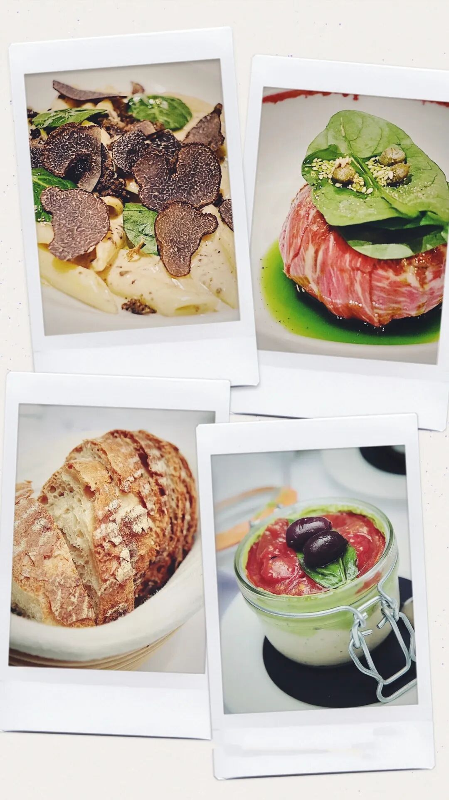
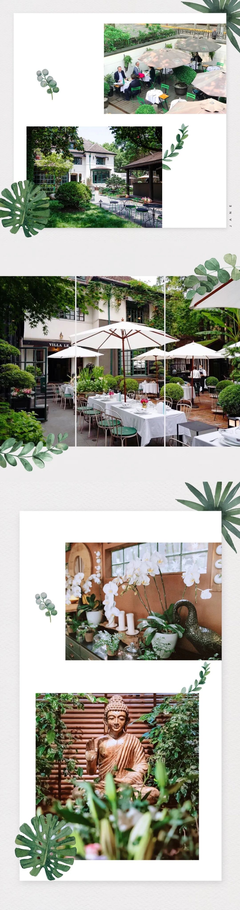
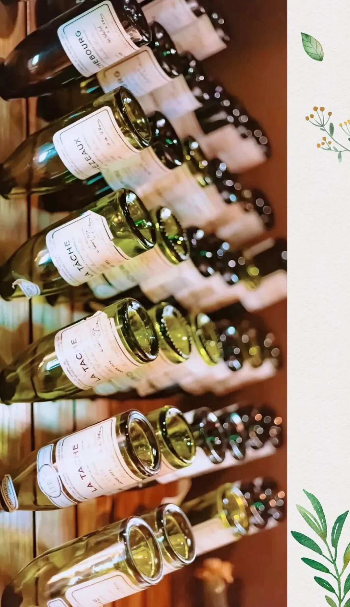
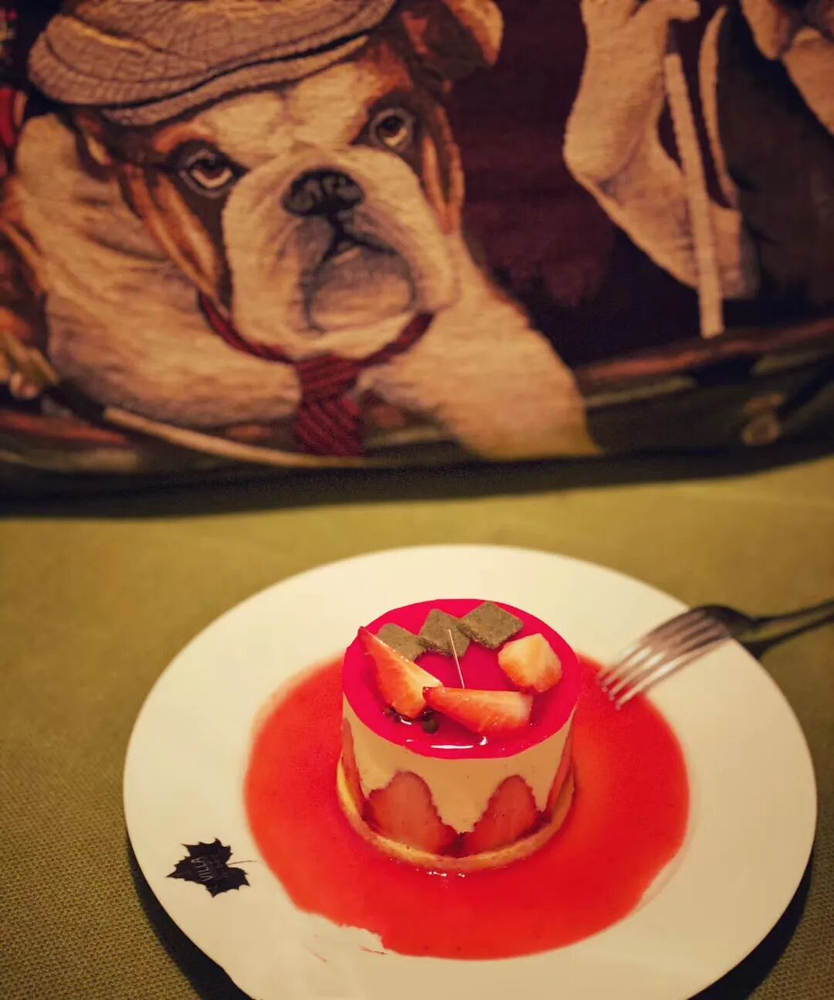

如何过上别人羡慕的生活？
如何过上别人羡慕的生活？
要回答这个问题，得先去问问 “别人” 。
马博年轻时在华尔街做对冲基金，回国后从事金融衍生品交易，百倍杠杆，豪赌人生，很快实现财富自由，过上了别人羡慕的生活。
后来他又去藤校念了博士，就不许别人叫他马总了，马博相信 Dr. title 更令人羡慕。
马博如此的执念还有很多。周末我们去 New Wave 吃饭，马博照例带来一个大长腿美女。因为自己的身高是硬伤，所以他的每个女朋友都又美又高。美女们也不图财，和马博在一起是倾慕他的智商，仿佛高智商能通过性传播……
可能就像普鲁斯特在《追忆似水年华》里写的：任何一样东西，当你渴望拥有它，它就盛开；一旦你拥有它，它就凋谢。

最后一道甜品被 Thomas Demand
在 UCCA Edge 的摄影展打了硬广
我原本担心无聊
马博却一脸兴奋地买票了
原来是把 “大尺幅” 错看成 “大尺度”
New Wave的味道一般，席间怀念起第一次一起吃饭的 Villa Le Bec 。疫情经历短暂歇业，好在最近又恢复了。
在上海，如果你恰巧遇到一家口味、环境、服务皆超水准的餐厅，那就抓紧时间多去光顾。因为它的结局无外乎三种：被慕名而来的食客弄得一座难求；要么老板坐地起价涨到人均几千；抑或盲目扩张在嘈杂的人声和潦草的菜肴中不复当年。

在上海的法餐厅里，我吃多少次都不觉得腻的有四家，** Villa Le Bec** 是其中之一。另外三家分别是：
清晨七点或傍晚五点时分的** Le Comptoir de Pierre Gagnaire **，那时的建业里嘉佩乐酒店静谧无人，属于私人的绝佳体验，此中美意，不足为外人道也。
我总想着要留给爱人一起共进晚餐的 **L'ATELIER de Joël Robuchon **，可一直拖到主厨 Jol Robuchon 过世那年，我依然是单身狗一枚。这件事教会我一个道理，人生得意须尽欢，莫使金樽空对月。
我从人均五百元开始光顾的 **Le Bistro de Racine **，直到如今人均一千五百元，如同一支错过低位没有加仓的股票，只能眼睁睁看着它迅速冲高。

近几年，Villa Le Bec 扩张成一整幢带法式花园的三层洋房，价格也水涨船高。但毕竟是法国的东北菜，相较其他米其林餐厅，菜量大还非常实惠，品控多年如一日，是五湖四海朋友都公认好吃好喝的地方。每逢有远道而来的朋友，我都会推荐他们尝一尝。

我念书时的Villa Le Bec 还是学校隔壁一座小小Bistro常沿着新华路的梧桐树走去歇歇脚吃一个覆盆子蛋糕再回去上课

很多人去 Villa Le Bec 都会尝尝咸鲜罐头，有鹅肝、鸭肝、鸭肉、兔肉、鱼肉多种口味，或者生牛肉塔塔。
但我更乐意推荐的是松露。
法国黑松露的产量已经越来越少，很多餐厅甚至会用云南产的黑松露代替。虽然每年11月至次年4月都是黑松露的时节，但只有1-2月间出产的才是最好的，气味更加馥郁，色泽更加黝黑，体积更加匀称。趁这段时间去 Villa Le Bec ，就能吃到最好的黑松露意面，而且还将黑松露融入很多别的菜肴作为 “最好的配菜”。

其实，** Villa Le Bec** 最打动我的，还是它如同置身法国的经典布置。我曾故意选择一年四季不同时节光顾：春日午后在户外法式花园洁白的伞下独坐，无所事事。夏天躲开烈日，入夜后在树荫遮蔽的露台喝威士忌加冰，喝不惯纯饮也没什么不好意思，洒脱一点多好。秋天在金黄色的梧桐落叶上走过，晒晒太阳，忘记一切，又与一切同在。冬天从平安夜、新年一直到情人节，圣诞红色的氛围都浓郁不褪却。四季如常，这里就有别人羡慕的生活。

这里也能喝到很多老年份的法国名庄酒
听说老板自己也爱喝
很多香港期货大佬（可能已经破落）
每次来上海都会来喝
综艺《奇遇人生》里有这样一个桥段，阿雅和春夏一起去追龙卷风，她们一路驱车，追了很久，却一直没有追到。大家都着急了，多么想要一个结果，以至于谁都没有享受这件事情。
其实，追龙卷风的乐趣，
最后可能就是 —— 没能追到风。
毕竟，生活中大部分时候都是“我快要追到” ，然后发现 “我完全没有追到” 。每天都是如此，“你想要的” 和 “你拥有的” 之间是差距巨大。
所以，与其纠结如何追到龙卷风，不如享受整个过程。

Villa Le Bec 的覆盆子蛋糕马博和我都爱吃的一道甜品但对于如何过上别人羡慕的生活我们的答案却截然不同
马博说：如果我遇到了龙卷风，我会不顾一切地拿住它。毕竟，当机会降 临时，你真正拿住了才是给你的机会；没有拿住之前，都不是给你的，那都不能叫做失去。当然它可能本来就是为别人准备的，路过你的时候，也是对你的一个考验。你如果选择不合适自己的东西，要负担的也非常非常多。
如何过上别人羡慕的生活？没有必要纠结具体的答案如果不总用完全了解的世界观去解决问题走出去看一下可能会豁然开朗很多
…

2022.08.08
——
END